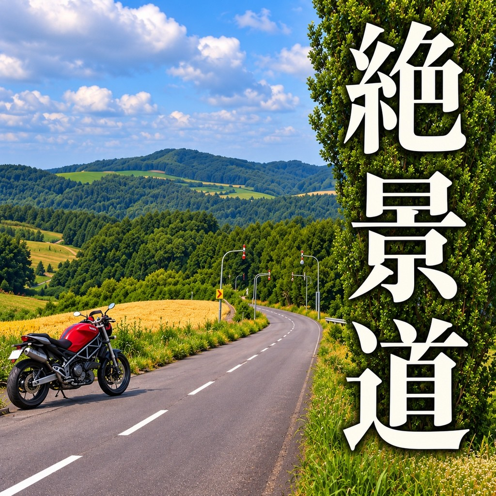
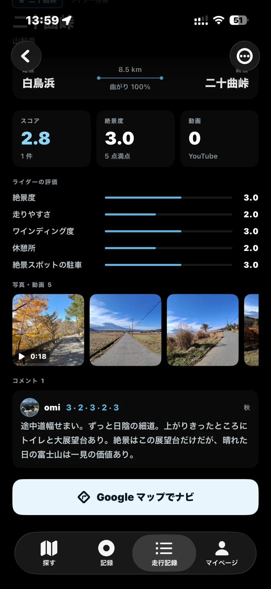
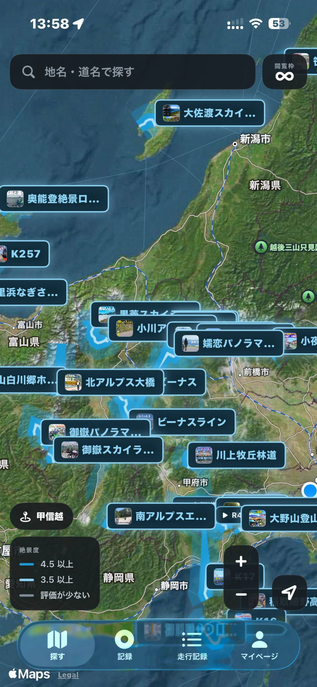
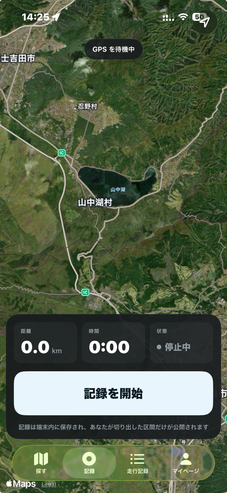
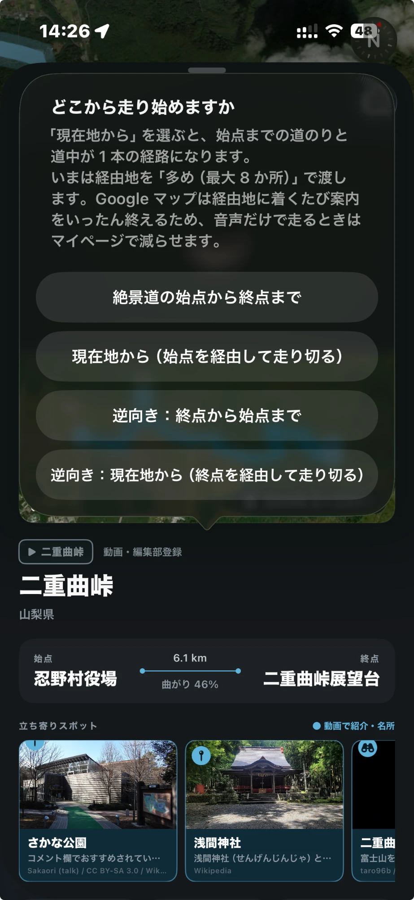
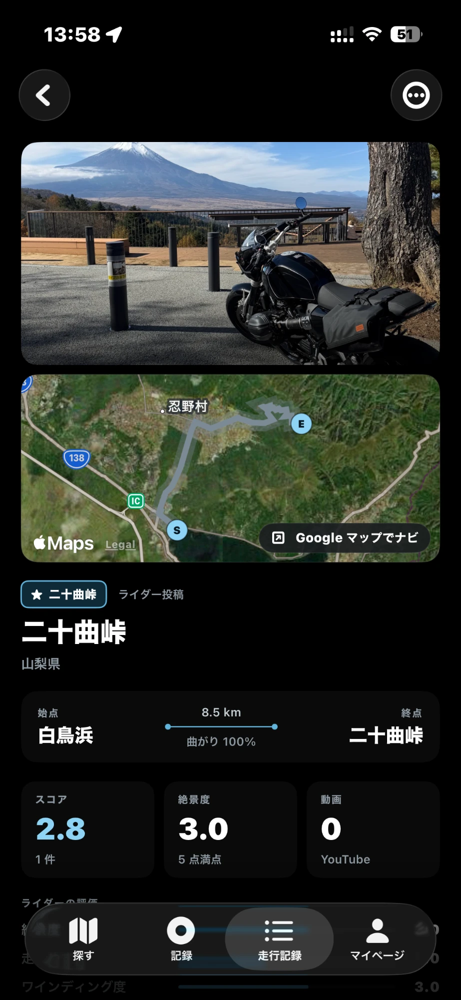

ZEKKEI-DO
走って気持ちのいい道を、ライダー同士で共有する道の口コミ地図です。
iPhone アプリ · 現在 TestFlight で先行テスト中


名の知れた峠だけでなく、知られていない気持ちのいい道を地図から探せます。絶景度・ワインディング・路面など 5 つの観点で評価されています。

走行を記録し、良かった区間だけを「ここからここまで」と切り出せます。他のアプリの記録（GPX / KML / TCX）も取り込めます。

沿線の展望台・飲食店・道の駅を、写真付きで道ごとにまとめています。地図アプリへそのまま渡せます。

現在地から始点を経由して走り切る経路を、地図アプリに引き渡せます。走り出す前に一度開けば足ります。
現在 TestFlight で先行テストを行っています。参加いただける方を募集しています。
iPhone（iOS 17 以降）に対応しています。アプリ内課金はありません。